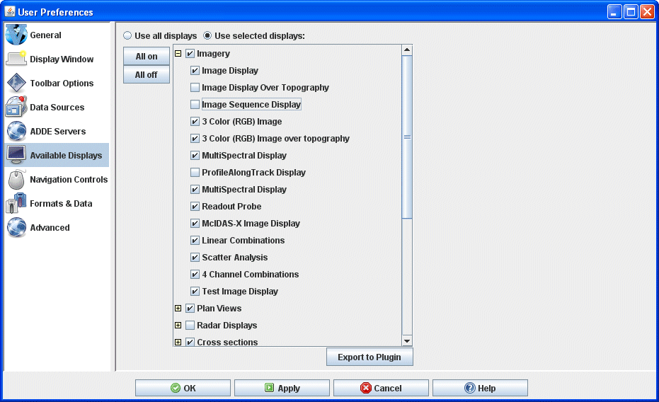

Available Displays Preferences
The User Preferences window is accessed in the Main Display window through the Edit->Preferences menu. The Available Displays tab allows the user to specify what types
of displays to use. The chosen displays can possibly be included in the Displays list in the Field Selector if the field you are displaying includes the display type in its properties. Choosing what displays you want to appear in the Field Selector will limit the number of displays in the list, making it easier to create your desired image.
The list of display types is hierarchal, meaning that you can turn off all displays, specific groupings of displays (ex. Plan Views), or individual display types within a group (ex. Color-Shaded Plan View can be turned off under Plan Views, but the rest can remain selected).
The image below represents the default settings for the Available Displays tab. Every display is selected on by default.

Image 1: Available Displays Preferences (Default)
Properties
- Use all displays - Selects all of the displays. With this option selected, it is possible for every display type in McIDAS-V to be used to create a display.
- Use selected displays - Uses only selected displays. This option allows you to individually select which display types are available to be used. The display types you leave checked can be used by McIDAS-V to create displays.
- - Selects all of the displays. With this option selected, it is possible for every display type in McIDAS-V to be used to create a display.
- - Unselects all of the displays. With none of the display types selected, you will not be able to create any displays in McIDAS-V. However, this can be a useful starting point if you only want to utilize specific displays, as it allows you to individually select on a few display types without having to unselect the rest of them.